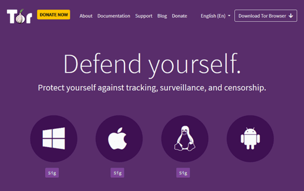

Tìm hiểu Dark Web từ cơ bản đến nâng cao
Việc truy cập Dark Web cực kỳ dễ dàng và cũng cực kỳ dễ bị phát hiện nếu bạn không có thực hiện các biện pháp phòng bị. Nếu bạn chưa quen với Darknet, bài viết này sẽ giúp bạn đứng vững trên con đường của mình.
Dark Web, hay Darknet, là một thuật ngữ chung để chỉ một tập hợp các trang web trên mạng được mã hoá với các địa chỉ IP ẩn – tất cả điều này nhằm mang lại sự ẩn danh tuyệt đối cho người dùng...
Dark Web không giống như Deep Web
Deep Web là tất cả các trang web không thể truy cập được bằng các công cụ tìm kiếm thông thường. Điều này bao gồm cả các trang trên Dark Web, cũng như các trang web phục vụ nhiều chức năng hơn mức thông thường, chẳng hạn như mạng nội bộ doanh nghiệp, nền tảng email trực tuyến, cơ sở dữ liệu, nền tảng ngân hàng trực tuyến và các dịch vụ thường yêu cầu mật khẩu hoặc các phương tiện xác thực khác..
Chúng được tìm thấy và truy cập trực tiếp bằng URL hoặc địa chỉ IP và được ẩn đằng sau tường lửa, paywalls và HTML forms. Bởi vì tất cả các trang web này đều nằm trong Deep Web, Deep Web thực sự rộng lớn hơn nhiều so với internet thông thường (còn được gọi là Clear Web).
Cách truy cập Dark Web an toàn
Cổng chính vào Dark Web là trình duyệt Tor. Đây là một mạng lưới relay tình nguyện được mã hoá trên khắp thế giới, qua đó kết nối internet với người dùng được định tuyến. Bạn có thể Tìm hiểu kỹ hơn về cách thức hoạt động của Tor do ANonyViet viết.
Mặc dù các relay là một phần không thể thiếu khiến Tor trở nên cực kỳ ẩn danh, nhưng chúng cũng có thể dẫn đến việc kết nối chậm. Điều này là do thay vì kết nối trực tiếp với máy chủ của trang web bạn muốn truy cập, bạn phải đi qua các relay được rải rác trên toàn cầu. Ngoài ra, vì hệ thống được phân cấp nên không phải tất cả các relay đều có cùng một CPU, có nghĩa là các relay sẽ hoạt động rất nhanh khi được sử dụng,
Cách dễ nhất để duyệt web trên Deep Web là tải và cài đặt trình duyệt Tor. Các URL Tor có domain là .onion. Không giống như các trang web .com, URL trên Dark Web thường phức tạp và khó nhớ, các trang web cũng thường xuyên thay đổi URL để tránh bị phát hiện và DDOS.
Khi bạn ở trên Dark Web, các ISP và chính phủ có thể không xem được hoạt động của bạn, nhưng họ sẽ biết bạn đang sử dụng mạng Tor. Chỉ riêng điều này là đủ để bạn bị chú ý rồi đó.
Đó là lý do tại sao mình khuyên bạn nên truy cập Tor bằng VPN. Bằng cách đó, lưu lượng truy cập internet của bạn sẽ được định tuyến qua VPN trước khi đi qua Tor và cuối cùng là đến đích. Với phương pháp này, ISP của bạn chỉ nhìn thấy lưu lượng VPN được mã hoá nên sẽ không biết bạn đang sử dụng Tor.
Mối quan tâm chính khi sử dụng Tor thông qua VPN là bạn phải tin tưởng nhà cung cấp VPN của mình, vì nhà cung cấp có thể thấy bạn đang sử dụng Tor. Để giảm thiểu vấn đề này, hãy sử dụng các VPN không ghi lại hoạt động của bạn và kết nối VPN của bạn trước khi mở trình duyệt Tor.
Cách truy cập Tor thông qua VPN
Bước 1: Tìm một dịch vụ VPN tốt
VPN tốt có nghĩa là VPN không lưu lại hoạt động, không bị rò rỉ DNS, nhanh, tương thích với Tor và tốt nhất là chấp nhận thanh toán bằng Bitcoin.
Mình đề xuất cho bạn Nordvpn hoặc Express VPN là VPN tốt nhất hiện có trên thị trường với các tính năng tuyệt vời và mã hoá cấp quân sự.
Bước 2: Tải và cài đặt trình duyệt Tor
Trước khi thực hiện, hãy kiểm tra xem VPN của bạn có đang chạy hay không. Ngoài ra, nhớ tải Tor từ trang chủ chính thức, không tải từ bên thứ ba nhé.
Sau khi Tor được cài đặt, hãy tìm thư mục Tor Browser và nhấp vào tệp “Start Tor Browser”.
Một cửa sổ mới sẽ mở ra yêu cầu bạn nhấp vào nút “Connect” hoặc “Configure”. Nhấp vào tùy chọn “Connect” để mở cửa sổ trình duyệt.
Bước 3: Bắt đầu duyệt các trang web .onion
Khi bạn mở Tor trên máy tính của mình, bạn sẽ tự động được chuyển hướng đến công cụ tìm kiếm DuckDuckGo. DuckDuckGo được thiết kế để cung cấp thêm quyền riêng tư và mã hoá trong khi tìm kiếm trên web, bạn cũng đừng nên nghĩ nó là phiên bản dark web của Google nhé.
Đó là bởi vì ngay cả trong Tor, DuckDuckGo cũng tìm kiếm được các trang web thông thường.
Các công cụ tìm kiếm Dark Web (sẽ được tìm hiểu rõ hơn ở phần dưới) sẽ đưa bạn đến các trang web .onion, chẳng hạn như:
- Welcome to Dark Web Links (http://bznjtqphs2lp4xdd.onion)
- Candle (http://gjobqjj7wyczbqie.onion)
- not Evil (http://hss3uro2hsxfogfq.onion)
Chỉ cần đảm bảo bạn luôn bật VPN trước khi mở Tor và bắt đầu lướt web thì bạn sẽ được đảm bảo an toàn một phần.
Dark Web không chỉ dành cho tội phạm
TÍnh năng ẩn danh do Dark Web cung cấp chắc chắn hấp dẫn những người muốn mua hoặc bán các hàng hoá bất hợp pháp như ma tuý, vũ khí hoặc dữ liệu bị trộm.
Nhưng cũng có những lý do chính đáng để sử dụng Dark Web. Trong những năm qua, nó đã trở nên phổ biến như một nơi trú ẩn an toàn cho những người tố cáo, các nhà hoạt động, nhà báo và những người khác, những người cần chia sẻ thông tin nhạy cảm, nhưng không thể làm điều đó một cách công khai vì sợ chính phủ của họ hoặc những người có quyền lực.
Các cơ quan cảnh sát và tình báo cũng sử dụng nó để theo dõi các nhóm khủng bố và theo dõi tội phạm mạng. Ngoài ra, các bộ phận CNTT của công ty thường xuyên thu thập dữ liệu trên Dark Web để tìm kiếm dữ liệu bị trộm và tài khoản bị xâm nhập.
Trong nhiều năm, Dark Web đã trở thành biểu tượng của sự tự do trên internet, đặc biệt là khi các quốc gia tiếp tục kiềm chế nó. Nó hiện đóng vai trò vô cùng quan trọng đối với một số tổ chức truyền thông liên quan đến báo chí điều tra, chẳng hạn như ProPublica và the Intercept. Đáng chú ý nhất là WifiLeak, trang web xuất bản các tài liệu chính thức đã được phân loại, cũng có một trang chủ trên Dark Web. Ngay cả Facebook cũng duy trì sự tồn tại của mình để truy cập vào các quốc gia bị chính phủ kiểm duyệt.
Lướt Dark Web không bất hợp pháp nhưng có thể nguy hiểm
Bạn không thể bị buộc tội hình sự nếu chỉ tìm kiếm trên Dark Web, nhưng bạn có thể gặp rắc rối vì sử dụng nó để thực hiện hoạt động bất hợp pháp: các tiêu đề về các hoạt động của cảnh sát liên quan đến Dark Web và nội dung khiêu dâm trẻ em, ma tuý hoặc tin tặc bán dữ liệu bị đánh cắp không phải là không có.
Hơn nữa, tính ẩn danh của Dark Web cũng khiến nó trở thành rủi ro. Vì không có sự giám sát, nên có rất nhiều kẻ lừa đảo. Điều đó có nghĩa là, để có thể duy trì sự an toàn của mình, bạn chỉ còn cách tuân theo các quy tắc bảo mật cơ bản áp dụng cho web thông thường: luân cẩn thận với các liên kết bạn nhấp vào, tránh các trang web hoặc liên kết quảng cáo bất hợp pháp, gây phiền nhiễu hoặc nguy hiểm cho nội dung bạn muốn xem
Trình duyệt Tor có hoàn toàn ẩn danh không?
Vào năm 2014, FBI với sự hỗ trợ của các nhà nghiên cứu tại Đại học Carnegie Mellon đã thành công phát triển một phương pháp khai thác dựa trên một lỗ hổng JavaScript của Firefox nhằm loại bỏ tính ẩn danh của một số người dùng Tor, bao gồm cả những người điều hành trang web Silk Road nổi tiếng. Mặc dù lỗ hổng cho phép các cuộc tấn công đó đã được khắc phục trong vòng vài ngày sau khi được phát hiện, nhưng sự cố vẫn tạo ra nỗi sợ hãi cho người dùng Tor rằng sau cùng thì nó có thể không an toàn 100%.
Tương tự, vào tháng 10 năm 2017, công ty bảo mật We Are Segment đã xác định được một lỗ hổng trong Tor đang ảnh hưởng đến một số người dùng Mac và Linux. Lỗ hổng này, được gọi là TorMoil, khiến địa chỉ IP bị rò rỉ khi người dùng truy cập vào URL bắt đầu bằng tệp: //, thay vì http: // hoặc https: //. We Are Segment đã thông báo cho các nhà phát triển Tor, họ đã nhanh chóng khắc phục lỗi bằng cách cập nhật phiên bản mới cho trình duyệt Tor.
Để giải quyết những vấn đề này, Tor Project gần đây đã cải thiện bảo mật và quyền riêng tư bằng cách tăng cường mã hóa. Nó cũng cung cấp cho các nhà phát triển web các công cụ để xây dựng các trang web Darknet hoàn toàn ẩn danh (được gọi là dịch vụ ẩn hoặc điểm hẹn) mà chỉ những người biết URL của trang web mới có thể phát hiện ra.
Các vụ án hình sự liên quan đến Dark Web
Mặc dù mình tin rằng Dark Web nên được sử dụng để quảng bá sự tự do ngôn luận và vượt qua kiểm duyệt, nhưng cũng không thể phủ nhận rằng báo chí có xu hướng tập trung vào hoạt động mờ ám hơn là điều đó. Dưới đây là một số câu chuyện nổi tiếng nhất đã xuất hiện trong những năm gần đây:
- Silk Road: Có lẽ hơn bất kỳ trang web nào khác, Dark Web luôn gợi nhớ về Silk Road . Silk Road bắt đầu là phát minh của một người theo chủ nghĩa tự do, người muốn bán nấm tự trồng lấy Bitcoin và cuối cùng đã tổ chức các giao dịch trị giá 1,2 tỷ đô la liên quan đến ma túy, súng, tiền giả và các công cụ của hacker. Được ủy quyền bởi người tạo ra trang web, Ross Ulbricht, được biết đến trên Silk Road với cái tên Dread Pirate Roberts. Ulricht cuối cùng đã bị bắt vì một bài đăng cũ trên một trang web thông thường, nơi ông quảng bá Silk Road trong những ngày đầu thành lập. Sai lầm của anh ấy là sử dụng địa chỉ email thật của bản thân.
- AlphaBay: Sau khi Silk Road bị đóng cửa, AlphaBay trở thành thị trường Dark Web nổi bật nhất. Khi AlphaBay gặp sự cố vào năm 2017, đó là do những sai lầm về bảo mật thậm chí còn cơ bản hơn so với những sai lầm của Dread Pirate Roberts. Một số ví tiền điện tử không được mã hóa liên tục mở và sử dụng lại cùng một bút danh trên Dark Web. Và khi cảnh sát ập vào nhà anh ta ở Thái Lan , anh ta đã đăng nhập vào máy chủ AlphaBay với tên người dùng “admin”. Máy tính đã được mở khóa và không được mã hóa, chứa các tệp văn bản của mật khẩu được sử dụng trên trang web, cũng như một tài liệu liệt kê loại và vị trí của tất cả các khoản nắm giữ tài chính của anh ấy có tiêu đề in đậm “TOTAL NET WORTH.” Vài ngày sau khi bị bắt, Alex Cazes được phát hiện đã chết trong phòng giam, dường như anh ta đã tự sát.
- Vụ án Playpen: Mặc dù chỉ tồn tại trong bảy tháng, trang web khiêu dâm trẻ em Playpen đã thu hút được 215.000 người dùng trước khi FBI có quyền truy cập vào máy chủ của nó thông qua thông tin do cơ quan thực thi pháp luật nước ngoài cung cấp (chưa được xác định công khai). Khi đóng cửa trang web, FBI tiếp tục lưu trữ nó trên các máy chủ của riêng mình trong hai tuần, họ đã sử dụng ứng dụng Flash để nắm bắt 1.300 địa chỉ IP của khách truy cập trang web. Điều này đã dẫn đến việc bắt giữ gần 900 người dùng trên toàn cầu, bao gồm cả người tạo ra Playpen, Steven Chase.
- Vụ án Ashley Madison: Vào năm 2015, nhóm hacker Impact Team đã xâm nhập một trang web hẹn hò dành cho các mối quan hệ ngoài hôn nhân có tên Ashley Madison. Các tin tặc đe dọa tiết lộ thông tin cá nhân của người dùng. Một tháng sau, khi thời hạn của họ không được đáp ứng, Nhóm hacker bắt đầu công khai dữ liệu trên Dark Web. Qua một số lần kết xuất, thông tin đã được tiết lộ bao gồm địa chỉ email và IP của 32 triệu thành viên, thư từ email của Giám đốc điều hành công ty mẹ của Ashley Madison và mã nguồn của trang web. Do Ashley Madison không yêu cầu xác minh email để tạo hồ sơ, nên có thể dễ dàng tạo tài khoản bằng địa chỉ email của người khác và sau đó sử dụng điều này để tống tiền họ. Mặc dù cảnh sát vẫn chưa biết ai là người chịu trách nhiệm cho cuộc tấn công, nhưng người ta có thể suy đoán rằng họ là những người bị ảnh hưởng bởi các hoạt động bảo mật kém này.
Các bước bảo mật khi vào Dark Web
KHÔNG thay đổi kích thước cửa sổ trình duyệt TOR hoặc bật full màn hình. Việc này có thể tiết lộ kích thước màn hình thực sự của bạn cho website bạn đang truy cập.
Bạn PHẢI sử dụng VPN bất cứ khi nào bạn được kết nối với Mạng TOR.
Hãy nhớ rằng TOR không nhất thiết phải ẩn danh 100%, bạn nên tắt JavaScript trong cài đặt trình duyệt Dark Web.
Ngắt kết nối webcam của bạn hoặc chặn máy ảnh bằng một số băng keo đen. Tin tặc và chính phủ có nhiều cách xâm nhập vào máy tính của bạn và bật camera. Chúng có thể sử dụng những hình ảnh nhạy cảm của bạn để tống tiền bạn.
KHÔNG BAO GIỜ sử dụng tên thật, ảnh, email hoặc thậm chí mật khẩu mà bạn đã sử dụng trước đây trên Dark Web. Sử dụng tài khoản email ẩn danh, ứng dụng nhắn tin an toàn và các biệt danh không liên quan gì đến bạn mà bạn chưa từng sử dụng trước đây.
Nếu bạn đã sử dụng Tor thì hãy suy nghĩ nghiêm túc về quyền riêng tư và bảo mật của mình.
Lưu ý cuối cùng, mình khuyến khích tất cả những người sử dụng Dark Web có trách nhiệm. Luôn AN TOÀN và đảm bảo VPN của bạn được kết nối!